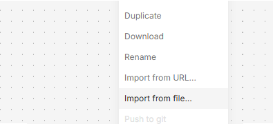
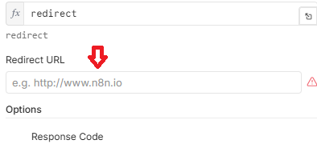

Stop Manually Tracking WooCommerce Orders.
Sync, Notify & Log in Seconds.
Pre-built n8n automation that routes every new order to Google Sheets or Airtable, alerts you via Slack or Telegram, and handles errors automatically. Zero code. Setup in <10 minutes.
The Order Tracking Bottleneck
Manual copy-paste wastes hours
Exporting CSVs, updating spreadsheets, and checking emails fragments your workflow and kills productivity.
Missed orders = lost revenue
Without real-time alerts, delayed fulfillment leads to bad reviews, refund requests, and abandoned carts.
Automate the entire pipeline
WooCommerce fires a webhook → n8n normalizes data → saves to Sheets/Airtable → notifies your team → logs errors. You close deals, not spreadsheets.
What You Get Exactly
1. Production-Ready n8n Workflow (.json)
Tested, optimized, and error-handled. Includes routing for Sheets/Airtable, Slack/Telegram notifications, and webhook response logic.
2. Multilingual Credentials Guide (PDF)
Step-by-step setup for Slack, Google, Airtable & Telegram. Available in 🇮🇹 IT, 🇬🇧 EN, 🇩🇪 DE. Zero guesswork.
3. WooCommerce Webhook Integration Doc
Exact payload format, endpoint setup, secret validation, and testing instructions. Works with WC 7.x+.
4. Commercial License & Lifetime Updates
Use for personal projects, clients, or agencies. One payment. Receive future improvements at no extra cost.
Not included: n8n hosting, WooCommerce store, third-party API keys (Slack/Google/Airtable/Telegram), or custom development.
Setup in 3 Simple Steps

Import Workflow
Open n8n → Click "Import from File" → Upload the .json. The canvas loads instantly.
Connect Services
Follow the multilingual guide to add Slack, Sheets/Airtable, and Telegram credentials.

Link to WooCommerce
Copy the n8n webhook URL → Paste into WooCommerce Settings → Advanced → Webhooks. Activate and test with a dummy order.
€79,73
No subscriptions. No usage limits. Own the workflow forever.
- ✓ Complete n8n workflow (.json) with error handling
- ✓ Multilingual credentials setup guide (IT/EN/DE)
- ✓ WooCommerce webhook integration documentation
- ✓ Commercial license for freelance/agency use
- ✓ 14-day money-back guarantee + email support
🔒 Secure checkout via Payhip • Instant digital delivery • VAT handled automatically
Frequently Asked Questions
Do I need to know how to code or use JavaScript?
No. The workflow is fully visual. The guide walks you through connecting credentials and setting environment variables using n8n's UI. If you can copy-paste and click "Save", you're set.
Does it work with n8n cloud (free tier) or self-hosted?
Both. The workflow uses standard nodes included in n8n free cloud and self-hosted versions. No premium or external services required beyond your chosen inventory/notification apps.
Can I choose between Google Sheets and Airtable? Or Slack vs Telegram?
Yes. The workflow includes routing switches. Set `DESTINATION_INVENTORY=google_sheets` or `airtable`, and `NOTIFICATION_TYPE=slack` or `telegram` in n8n Variables. Only the selected path runs.
What WooCommerce version is supported?
Tested and optimized for WooCommerce 7.x and 8.x+. The webhook payload is normalized to handle minor version differences. Works with any standard WC install.
What if something breaks or I can't set it up?
You get 14 days to test. If the workflow fails to run as documented, or setup support doesn't resolve your issue, email us for a full refund. No hassle, no questions.
Stop Chasing Orders. Let the System Do It.
Import once. Configure in 10 minutes. Save hours every week. Instant download. 14-day guarantee.
Get the WooCommerce Automation →